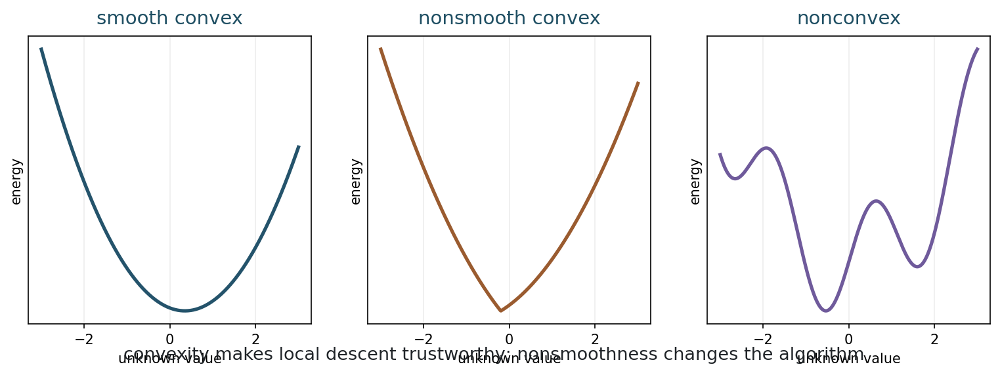
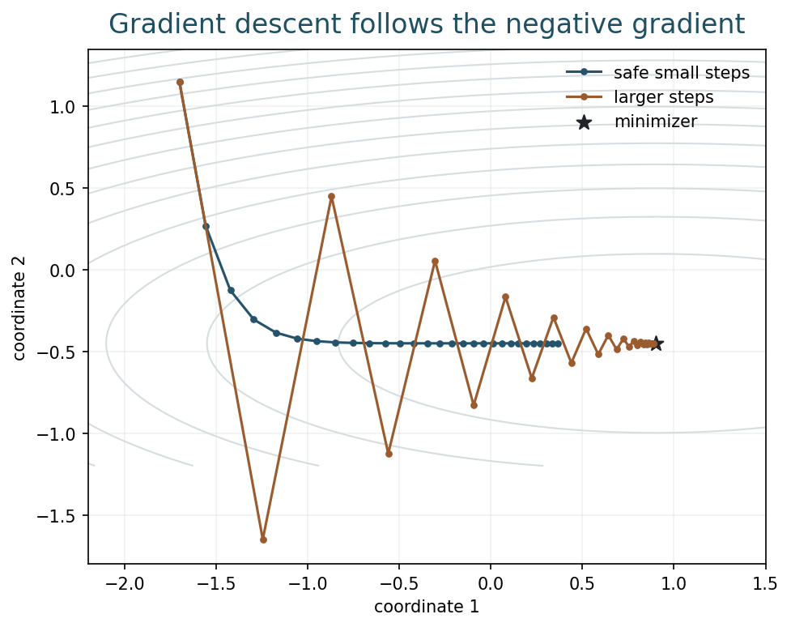
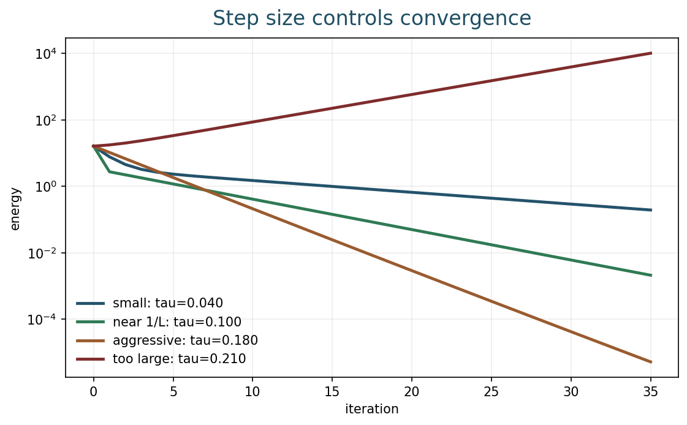
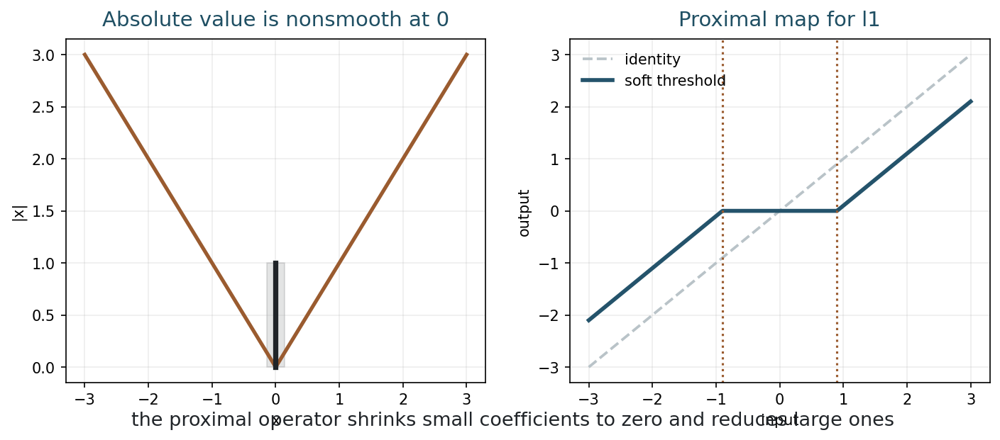
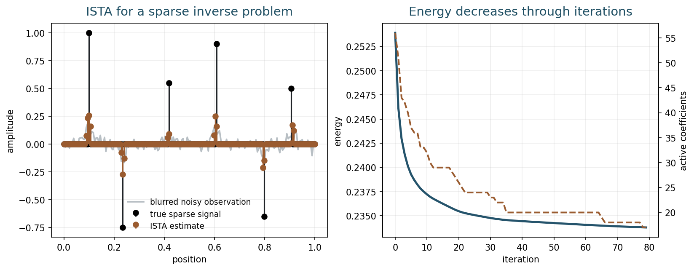
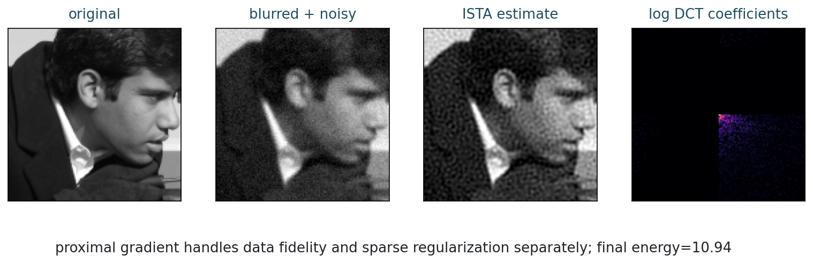

Optimization Methods
Chapter 9
Slides | Notebook | Open in Colab
Learning Goals
By the end of this chapter, you should be able to:
- recognize convex optimization problems in imaging;
- use gradient descent for smooth energies;
- explain why step size matters;
- understand subgradient intuition for nonsmooth terms;
- describe proximal operators and ISTA;
- use optimization diagnostics to separate solver failure from model failure.
Models Are Not Enough
A variational model defines a reconstruction as a minimizer:
\min_u E(u).
An optimization method gives a procedure for finding that minimizer:
u^0,\ u^1,\ u^2,\ldots
Regularization chooses the model. Optimization chooses how the model is solved.
This distinction matters. A good model can fail in practice if solved poorly, and a fast algorithm can be meaningless if it minimizes the wrong objective.
Three Questions For Any Algorithm
When reading or reporting an iterative reconstruction method, ask three questions.
| Question | Why it matters |
|---|---|
| What objective or fixed point is being targeted? | identifies the mathematical goal |
| What update rule is used? | identifies the computational method |
| What evidence shows the iteration behaved well? | separates convergence evidence from visual impression |
For classical convex optimization, the target is often an explicit energy. For plug-and-play or learned methods, the target may be a fixed point rather than a known energy. This difference matters, but the reporting habit is the same: name the target, name the update, and show diagnostics.
This habit is especially useful in projects. If ground truth is unavailable, students can still report objective curves, residuals, iterate changes, parameter sensitivity, and qualitative failure cases. A reconstruction image alone is rarely enough.
Why This Chapter Matters
Chapters 7 and 8 defined reconstructions as minimizers of energies. This chapter asks how those minimizers are actually found. In imaging, this is not a small implementation detail. The image can contain hundreds of thousands or millions of unknowns, and the objective may be nonsmooth.
Optimization is also the bridge to neural networks. Many neural reconstruction methods can be understood as learned or unrolled optimization algorithms. The steps of an iterative method become layers of a network, and parameters such as thresholds, filters, or step sizes may be learned from data.
Before learning those steps, we need to understand what the classical steps do.
Convexity
A set C is convex if the segment between any two points in C stays in C:
(1-t)x+ty\in C,\qquad 0\leq t\leq 1.
Nonnegative intensity constraints and box constraints often form convex sets.
A function E is convex if
E((1-t)x+ty) \leq (1-t)E(x)+tE(y).

Convexity concerns the shape of the landscape; smoothness concerns the tools we can use.
For a convex energy:
- every local minimum is global;
- descent methods have a target worth reaching;
- optimality conditions are meaningful.
TV and l1 energies can be convex but nonsmooth. Convexity says the landscape is well behaved; smoothness says which algorithms are straightforward.
The figure separates three ideas that students often mix together:
- convex and smooth: gradient descent is natural;
- convex and nonsmooth: the global landscape is safe, but ordinary gradients are not enough;
- nonconvex: local minima, initialization, and training dynamics become important.
Deep learning usually lives in the third category during training. Many classical imaging models in this chapter live in the first two.
Gradient Descent
For a differentiable energy E,
u^{k+1}=u^k-\tau\nabla E(u^k).
The parameter \tau>0 is the step size, also called the learning rate.
The gradient points toward fastest local increase, so -\nabla E(u^k) points toward fastest local decrease.

Gradient descent uses local slope information to move downhill.
For a quadratic imaging energy, each gradient step has a concrete meaning. The residual Au^k-y measures disagreement with the data. The adjoint A^\top transports that disagreement back to image space. The regularizer contributes another force, often smoothing or shrinking the image. The update combines these forces.
This interpretation matters more than the formula. If an implementation has the wrong adjoint, the algorithm may still run and decrease some quantity, but not the intended reconstruction energy.
Step Size
Step size controls stability.
If \tau is too small:
- progress is safe but slow;
- many iterations are needed.
If \tau is too large:
- the method may oscillate;
- the energy can increase;
- the iterates may diverge.

The same objective can behave very differently under different step sizes.
If \nabla E is Lipschitz with constant L, a typical safe range is
0<\tau<\frac{2}{L}.
Often one uses
\tau\leq \frac{1}{L}
for stable monotone decrease.
The Lipschitz constant is a measure of how quickly the gradient can change. A steep or badly conditioned energy requires a smaller step size. This is the optimization version of the singular-value story from Chapter 5: directions with very different sensitivities make naive algorithms slow or unstable.
In practice, step sizes may be chosen by theory, backtracking line search, heuristic tuning, or learned parameters in an unrolled method.
Conditioning And Slow Directions
Even when a step size is stable, gradient descent may be slow.
For a quadratic energy, level sets can be nearly circular or highly elongated. In a nearly circular landscape, the gradient direction points efficiently toward the minimizer. In an elongated landscape, the method may zigzag: a step size large enough to move along the flat direction may be too large for the steep direction.
This connects optimization back to ill-posed inverse problems. If the forward operator has singular values with very different magnitudes, the objective has directions with very different curvature. Stable directions and unstable directions coexist. Regularization improves the model, but conditioning still affects how quickly an algorithm computes the solution.
Preconditioning, variable splitting, and more advanced methods are partly ways to reshape the computational problem. We will not develop all of them in this course, but students should recognize the symptom: a method can be mathematically correct and still converge too slowly to be useful.
Stopping Criteria
Common stopping rules include:
- maximum number of iterations;
- small change in energy;
- small change in the image;
- small gradient norm;
- visual or task-driven stopping.
Stopping is not a purely technical detail. In some iterative reconstructions, early stopping itself acts like a form of regularization.
Early stopping can help because the first iterations often recover stable, large-scale structure, while later iterations may fit noise or unstable components. This is not guaranteed for every algorithm, but it is a useful phenomenon to recognize.
When reporting computational experiments, it is therefore not enough to state the final image. One should also state the number of iterations, stopping rule, step size, and objective being minimized.
Nonsmooth Terms
Sparse and edge-preserving models often use terms such as
|x|, \qquad \|x\|_1, \qquad \operatorname{TV}(u).
These terms have corners. For x\neq 0,
\frac{d}{dx}|x|=\operatorname{sign}(x).
At x=0, there is no single derivative.
The corner at zero is exactly what encourages sparsity.
Subgradient Intuition
At a nonsmooth point, there may be many valid slopes. For |x| at zero,
\partial |0|=[-1,1].
This is the subgradient intuition. A full convex analysis treatment makes this precise, but the imaging message is simple: nonsmooth terms need optimization tools that respect their corners.
Treating TV or l1 penalties as if they were ordinary smooth functions can produce unstable or incorrect algorithms.
The corner at zero is what allows exact zeros. A smooth quadratic penalty can make coefficients small, but it usually does not set them exactly to zero. The l1 penalty can. This is why nonsmoothness is not merely a nuisance; it is part of the modeling power.
Proximal Operators
The proximal operator of a regularizer R is
\operatorname{prox}_{\tau R}(v) = \operatorname*{argmin}_u \frac12\|u-v\|_2^2+\tau R(u).
It balances staying near v with reducing the regularizer.
This is a central idea: instead of differentiating a nonsmooth term, solve a small regularized problem exactly or efficiently.
The proximal operator can be read as a denoising or simplification step. It asks: starting from v, what nearby point has a lower regularizer? For different regularizers, this question gives different operations:
| Regularizer | Proximal behavior |
|---|---|
| l2 norm squared | shrink smoothly |
| l1 norm | soft-threshold coefficients |
| indicator of a convex set | project onto the set |
| TV | perform TV denoising subproblem |
This point is central for plug-and-play methods later in the course. If a proximal operator behaves like a denoiser, one can ask what happens when a learned denoiser replaces it.
Soft Thresholding
For R(u)=\lambda\|u\|_1, the proximal operator is soft thresholding:
\operatorname{prox}_{\tau\lambda\|\cdot\|_1}(v) = \operatorname{sign}(v)\max(|v|-\tau\lambda,0).

Soft thresholding sets small coefficients to zero and shrinks large coefficients toward zero.
Soft thresholding is nonlinear and is a key operation behind many sparse reconstruction methods.
Small coefficients become exactly zero. Large coefficients survive but are reduced. This matches the idea that many coefficients are likely to be noise or insignificant, while a smaller number carry meaningful structure.
Soft thresholding is simple enough to write in one line of code, but conceptually it is a complete prior step.
Proximal Gradient
Suppose the energy is split as
E(u)=f(u)+R(u),
where f is smooth and R may be nonsmooth.
Proximal gradient uses
u^{k+1} = \operatorname{prox}_{\tau R} \left(u^k-\tau\nabla f(u^k)\right).
The gradient step improves the smooth data term. The proximal step imposes the nonsmooth prior.
This split is useful because the two parts of the energy require different tools. We use derivatives where derivatives are reliable, and proximal operators where nonsmooth structure matters.
Data Step, Prior Step
Proximal gradient has a useful interpretation for imaging:
- take a data-consistency step;
- take a prior-enforcing step;
- repeat until the two are balanced.
This is one of the central patterns of the course. It appears in sparse reconstruction, TV algorithms, plug-and-play methods, and unrolled neural networks. The formula may change, but the architecture of the thought remains recognizable:
\text{measurement correction} \quad \longleftrightarrow \quad \text{image prior}.
In classical optimization, the prior step is mathematically tied to a regularizer through a proximal operator. In plug-and-play methods, the prior step may be replaced by a denoiser. In an unrolled neural network, the update may be learned from training data. The more learned the step becomes, the more important it is to check data consistency and failure cases.
ISTA
For the l1-regularized problem
\min_x \frac12\|Ax-y\|_2^2+\lambda\|x\|_1,
ISTA is
x^{k+1} = S_{\tau\lambda} \left(x^k-\tau A^\top(Ax^k-y)\right),
where S_{\tau\lambda} is soft thresholding.
| Step | Meaning |
|---|---|
| compute Ax^k-y | current data mismatch |
| apply A^\top | move mismatch back to image or coefficient space |
| gradient step | improve data fidelity |
| soft threshold | impose sparsity |
Reading ISTA as an inverse-problem algorithm:
- simulate the current measurement Ax^k;
- compare it with the observed data y;
- backproject the error through A^\top;
- take a data-consistency step;
- apply the sparse prior through soft thresholding.

ISTA alternates between data correction and sparsity promotion.

The same pattern appears in image reconstruction with transform-domain sparsity.
This pattern will appear again in modern neural imaging. Unrolled networks often keep the data-consistency step and replace the hand-designed proximal or thresholding step with a learned module.
From ISTA To A Learned Iteration
ISTA is useful not only because it solves an l1 problem. It is useful because its structure is visible:
x^{k+1} = S_{\tau\lambda} \left(x^k-\tau A^\top(Ax^k-y)\right).
The term A^\top(Ax^k-y) is tied to the measurements. The soft-thresholding operator is tied to the sparse prior. An unrolled learned method may keep the first part and replace the second part:
x^{k+1} = \mathcal{D}_{\theta_k} \left(x^k-\tau_k A^\top(Ax^k-y)\right),
where \mathcal{D}_{\theta_k} is a learned denoising or correction module.
This formula should not be read as saying that every network is ISTA. It shows the conceptual bridge. A classical algorithm alternates between what the data say and what the prior says. A learned algorithm can keep that alternation while learning a more flexible prior step.
Optimization And Neural Networks
Optimization methods do not disappear when neural networks enter the course. They reappear in two ways.
First, neural networks are trained by optimization. Training chooses parameters \theta to reduce a loss over examples:
\min_\theta \sum_j \mathcal{L}(f_\theta(y_j),x_j).
Second, some reconstruction networks are built from optimization algorithms. A classical iteration such as
x^{k+1} = \operatorname{prox}_{\tau R} \left(x^k-\tau A^\top(Ax^k-y)\right)
can be turned into a network by learning parts of the update. For example, one may learn thresholds, filters, step sizes, or replace the proximal operator with a convolutional neural network.
This is called unrolling. It is powerful because the architecture inherits the logic of an inverse-problem algorithm while gaining flexibility from data.
The central caution remains: learned updates should still respect the measurements. A visually plausible image is not automatically a data-consistent reconstruction.
Common Failure Modes
Optimization can fail for reasons that are easy to confuse with modeling failure:
- the step size is too large;
- the implemented objective is not the intended objective;
- stopping too early hides convergence;
- stopping too late wastes computation or overfits noise;
- a nonsmooth term is treated as if it were smooth.
The more sophisticated the model, the more important it is to know what the algorithm is actually minimizing.
For learned or unrolled methods, the failure modes become broader. A network may perform well on validation examples but fail under a different noise level, a different scanner, a different anatomy, or a different image distribution. Optimization diagnostics and data-consistency checks remain useful because they help separate numerical failure from modeling failure.
Optimization Diagnostics
A final reconstruction image is not enough evidence that an optimization method behaved well.
Useful diagnostics include:
| Diagnostic | What it can reveal |
|---|---|
| objective value versus iteration | whether the algorithm is actually decreasing the chosen energy |
| residual norm \|Ax^k-y\| | whether data consistency is improving or being sacrificed |
| regularizer value R(x^k) | whether the prior term is dominating |
| step norm \|x^{k+1}-x^k\| | whether the algorithm is stabilizing |
| visual snapshots | whether numerical progress matches meaningful image improvement |
These diagnostics do not prove the model is correct. They tell us whether the solver is doing what the model asks it to do.
This distinction is especially important for unrolled neural networks. An unrolled network may look like an iterative algorithm, but some steps are learned and may no longer minimize a known objective. In that case, diagnostics such as data residuals, parameter sensitivity, and failure cases become even more important.
Computation
The Week 9 notebook lets you change the gradient descent step size, vary the soft-threshold value, run ISTA with different regularization weights, and compare energy decrease with image quality.
Run:
python3 examples/week09_optimization.pyor open the notebook in Colab from the link at the top of this chapter.
In the notebook, compare three curves or quantities when possible: objective value, reconstruction error, and visual quality. They often move together at first, but they do not always tell the same story.
Exercises
- Explain the difference between a variational model and an optimization method.
- For gradient descent, describe what happens when the step size is too small and when it is too large.
- Why does the absolute value penalty encourage exact zero values?
- Write the proximal operator definition for a regularizer R.
- Explain ISTA as a two-step algorithm: one step for data fidelity, one step for sparsity.
- Explain how an unrolled neural network can be viewed as a learned version of an iterative reconstruction algorithm.
- Name two diagnostics you would plot to check whether an iterative reconstruction method is behaving sensibly.
Takeaways
- Convexity makes minimization conceptually safer.
- Gradient descent solves smooth problems by local descent.
- Step size controls stability and speed.
- l1 and TV are convex but nonsmooth.
- Proximal operators are central for sparse and edge-preserving imaging.
- Optimization diagnostics help distinguish solver behavior from modeling quality.
- Unrolled neural networks reuse the structure of iterative inverse-problem algorithms while learning some of their components.